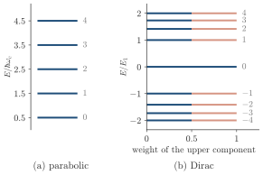
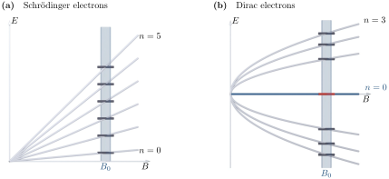
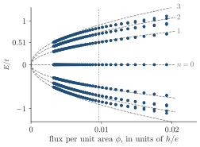

Page 7 of 13 of this session
4.10 Landau levels of Dirac electrons
What changes when the electrons have a Dirac cone instead of a parabolic band? We will now see that the square of the Dirac Hamiltonian in a field is again a harmonic oscillator. So the levels are \(\pm\sqrt{|n|}\) times a first level \(E_1\), they grow as \(\sqrt{B}\), and one level stays at zero energy for every field.
\[E_n = \hbar\omega_c\left(n+\frac{1}{2}\right), \qquad n=0,1,2,\dots, \tag{4.6}\]
These are the Landau levels of Schrödinger electrons, from Section 4.9, with the cyclotron frequency \(\omega_c=B/m\). They are equally spaced, and they grow linearly with the field.
Now we repeat the same calculation for a Dirac Hamiltonian, \(H_0 = v_F(p_x\sigma_x+p_y\sigma_y)\), which is the low-energy effective description of graphene near the \(K\) point, from Section 2.11. With the same minimal coupling and the same Landau gauge, \(\pi_x=p_x\), \(\pi_y=p_y-Bx\), the Hamiltonian is now an off-diagonal \(2\times2\) matrix,
\[H = v_F\begin{pmatrix}0 & \pi_x-i\pi_y\\ \pi_x+i\pi_y & 0\end{pmatrix}.\]
The matrix \(H\) is not diagonal and we cannot solve it by inspection, but its square is. We introduce the magnetic length \(\ell_B=\sqrt{\hbar/B}\) and the ladder operators \(a = \frac{\ell_B}{\sqrt{2}\hbar}(\pi_x+i\pi_y)\) and \(a^\dagger=\frac{\ell_B}{\sqrt{2}\hbar}(\pi_x-i\pi_y)\). Since \([\pi_x,\pi_y]=i\hbar^2/\ell_B^2\), these operators satisfy the ordinary bosonic commutation relation \([a,a^\dagger]=1\). In terms of \(a,a^\dagger\) we have
\[H = \frac{\sqrt{2}\hbar v_F}{\ell_B}\begin{pmatrix}0 & a^\dagger\\ a & 0\end{pmatrix} \quad\Longrightarrow\quad H^2 = \frac{2\hbar^2v_F^2}{\ell_B^2}\begin{pmatrix}a^\dagger a & 0\\ 0 & aa^\dagger\end{pmatrix} = \frac{2\hbar^2v_F^2}{\ell_B^2}\begin{pmatrix}N & 0\\ 0 & N+1\end{pmatrix},\]
where \(N=a^\dagger a\) is the number operator of the harmonic oscillator. In other words, \(H^2\) has the form \(p^2+B^2x^2+\text{const}\), which is a harmonic oscillator. Since \(H^2\) is diagonal and has the form of a harmonic oscillator, its eigenvalues are \(2\hbar^2v_F^2 n/\ell_B^2\) for \(n=0,1,2,\dots\), and the energy itself is the square root.
The Landau levels of Dirac electrons are
\[E_n = \text{sgn}(n)\, v_F\sqrt{2\hbar B|n|}, \qquad n = 0,\pm1,\pm2,\dots, \tag{4.7}\]
so \(E_n=\mathrm{sgn}(n)\sqrt{|n|}\,E_1\) with \(E_1=\sqrt2\,\hbar v_F/\ell_B\). The level \(n=0\) sits at zero energy for every field, and the other levels grow as \(\sqrt{|n|B}\), so they are not equally spaced.
The steps From the Dirac Hamiltonian in a field to the levels (4.7)
From the definitions of the ladder operators, \(\pi_x+i\pi_y=(\sqrt2\hbar/\ell_B)\,a\) and \(\pi_x-i\pi_y=(\sqrt2\hbar/\ell_B)\,a^\dagger\), so
\[H=\frac{\sqrt2\hbar v_F}{\ell_B}\begin{pmatrix}0&a^\dagger\\ a&0\end{pmatrix}.\]
The commutator is the one of an oscillator, since
\[[a,a^\dagger]=\frac{\ell_B^2}{2\hbar^2}\,[\pi_x+i\pi_y,\pi_x-i\pi_y]=\frac{\ell_B^2}{2\hbar^2}\big(-2i\,[\pi_x,\pi_y]\big)=1,\]
with \([\pi_x,\pi_y]=i\hbar^2/\ell_B^2\) for the charge \(+e\) of this session. Let us take the simplest state first, the one with zero energy. We write \(\psi=(\phi_1,\phi_2)\), and \(H\psi=0\) means \(a^\dagger\phi_2=0\) and \(a\phi_1=0\). The first equation has no normalizable solution, since \(a^\dagger\) raises every state of the oscillator, so \(\phi_2=0\). The second one is the ground state of the oscillator, \(\phi_1=|0\rangle\). This is the zero mode, and its lower component vanishes.
For \(n\ge1\) we try \(\psi=(\alpha|n\rangle,\beta|n-1\rangle)\). With \(a|n\rangle=\sqrt n\,|n-1\rangle\) and \(a^\dagger|n-1\rangle=\sqrt n\,|n\rangle\), the equation \(H\psi=E\psi\) becomes
\[E\,\alpha=\frac{\sqrt2\hbar v_F}{\ell_B}\sqrt n\,\beta, \qquad E\,\beta=\frac{\sqrt2\hbar v_F}{\ell_B}\sqrt n\,\alpha,\]
so \(E=\pm\sqrt{2n}\,\hbar v_F/\ell_B\) with \(\beta=\pm\alpha\), meaning that these levels have the same weight in the two components. With \(\ell_B^2=\hbar/B\) we have \(\hbar/\ell_B=\sqrt{\hbar B}\), and \(E=\pm v_F\sqrt{2\hbar Bn}\), which is (4.7). The square \(H^2\) gives the same, since on these states it has the eigenvalue \(2\hbar^2v_F^2n/\ell_B^2\).
The level \(n=0\) is a real mode at exactly zero energy. For this mode the lower spinor component vanishes identically, so there is no partner state to pair it with.
The square root in (4.7) is the origin of the \(\sqrt{B}\) scaling in graphene. The spectrum is the square root of a harmonic-oscillator spectrum and not the spectrum itself, so both the dependence on the field and the level spacing change their behavior. For Schrödinger electrons the levels are equally spaced and grow linearly. For Dirac electrons the levels are spaced as \(\sqrt{n}\) and grow as \(\sqrt{B}\). With \(v_F=10^6\) m/s for graphene and \(m^*=0.067\,m_e\) for GaAs, at the same field the Landau levels of graphene are roughly one order of magnitude higher in energy than the ones of a GaAs 2DEG. The first level \(E_1\) of graphene is \(21\) times the spacing \(\hbar\omega_c\) of GaAs at \(1\) T and \(6.6\) times at \(10\) T, and this ratio falls as \(1/\sqrt{B}\).
Figure 4.4 shows how the two ladders move with the field, linearly in one case and as a square root in the other. The ladder at one field is a cut through each fan, and it includes the zero mode, which has no counterpart in the Schrödinger case.
The two ladders at one field are drawn again in Schematic 4.7, now with the two components of the spinor. The zero mode lives in the upper component only, which is what it means that its lower component vanishes.


The honeycomb lattice has this fan near zero energy, where its bands are two Dirac cones, and Schematic 4.8 shows it computed with pyqula.

g3_landau_fan_honeycomb.py
In graphene we can see the Landau levels with light. Infrared transmission is measured in magnetic fields up to \(18\) T. Resonances between hole Landau levels and electron Landau levels, as well as between hole and electron levels, are resolved. Their energies are proportional to \(\sqrt{B}\), as (4.7) gives, and the band velocity deduced from them is \(v_F\approx1.1\times10^6\) m/s. With this velocity (4.7) gives \(E_1=169\) meV at \(18\) T, which is our own number. The article also finds no precise scaling between the different transitions, and it relates this to many-particle effects. The measurement is in this article.
The field of a graphene sample is multiplied by 9. By which factor does the energy of the first Landau level above zero change?
Show the answers
- A. ✗ False
This is false. The first level is \(E_1\approx36\,\mathrm{meV}\) at 1 T and \(109\,\mathrm{meV}\) at 9 T. It grows with the field.
- B. ✗ False
This is false. A factor 9 is the law of the parabolic band, where \(\hbar\omega_c\propto B\). For graphene it would give \(327\,\mathrm{meV}\) at 9 T, and not the \(109\,\mathrm{meV}\) of the square-root law.
- C. ✓ True
This is true. The energy (4.7) is proportional to \(\sqrt{|n|B}\), so a factor 9 in the field gives a factor 3 in the energy.
\[E_n = \text{sgn}(n)\, v_F\sqrt{2\hbar B|n|}, \qquad n = 0,\pm1,\pm2,\dots, \tag{4.7}\]
Notebook check-in: session4.ipynb, in two groups. The parabolic case starts with “The dispersion of the square lattice” (Reminder) and “Bands in the conventional quantum Hall state” (Reminder). Then it has “Landau levels of conventional electrons” (Core), “Magnetic field dependence of Landau levels” (Core) and “Imaging the magnetic field dependence in the Landau levels” (Core). The Dirac case starts with “The dispersion of the honeycomb lattice” (Reminder) and “Bands in the Dirac quantum Hall state” (Reminder). Then it has “Landau levels of the Dirac equation” (Core), “Magnetic field dependence of Dirac Landau levels” (Core) and “Imaging the magnetic field dependence in the Dirac Landau levels” (Core).
Build a ribbon of the square lattice, which has a parabolic band bottom, and an armchair ribbon of the honeycomb lattice, which has a Dirac cone. Switch on the Peierls substitution (4.4) and check both spectra. For the square lattice you should find equally spaced flat Landau levels that grow linearly in \(B\), as in (4.6). For the honeycomb lattice you should find levels with unequal spacing that grow as \(\sqrt{B}\), as in (4.7). The “imaging” sections let you follow the energy of each level as a function of the field strength, which is the most direct numerical check of the linear and square-root scaling that we derived above.
The Landau levels of Dirac electrons are
\[E_n=\mathrm{sgn}(n)\,v_F\sqrt{2\hbar B|n|}.\]
At a fixed field, what is the ratio \(E_4/E_1\)?
Show the answers
- A. ✗ False
This is false. This is the ratio of a linear ladder with no offset. With \(E_1=36.3\,\mathrm{meV}\) at 1 T it would give \(E_4=145\,\mathrm{meV}\), while the square-root law gives \(73\,\mathrm{meV}\).
- B. ✓ True
This is true. The levels go as \(\sqrt{n}\), so \(E_4/E_1=\sqrt{4}=2\).
- C. ✗ False
This is false. This would need \(E_n\propto n^2\). With \(E_1=36.3\,\mathrm{meV}\) it gives \(E_4=581\,\mathrm{meV}\) at 1 T, which is far above the \(73\,\mathrm{meV}\) of the square-root law.
Each picture shows the Landau levels of one material at one field. Which one is graphene?
Show the answers
- A. ✗ False
This is false. The levels are at \(0.5\), \(1.5\), \(2.5\) and \(3.5\) in units of \(\hbar\omega_c\), all one step apart, which is the ladder of a parabolic band such as GaAs. For graphene the steps after \(E_1\) are \(0.41\,E_1\) and then \(0.32\,E_1\), so they get smaller.
- B. ✓ True
This is true. There is a level at zero energy, and the others are at \(\pm1\), \(\pm1.41\), \(\pm1.73\) and \(\pm2\) in units of \(E_1\), which is \(\pm\sqrt{|n|}\,E_1\) of the Dirac equation.
- C. ✗ False
This is false. The levels follow \(\pm\sqrt{n}\,E_1\), but there is no level at zero energy. Graphene has the level \(n=0\) at zero energy for every field. For the valley \(K\) and the charge \(+e\) of this session it is the zero mode whose lower component vanishes, and in the other valley it lives on the other sublattice.
In graphene each Landau level of (4.7) holds four states per flux quantum, two spins times two valleys. At zero density the level \(n=0\) is half filled, since the spectrum is symmetric around zero energy. Each filled state per flux quantum adds \(e^2/h\) to the Hall conductance. Show that the plateaus are at \(|\sigma_{xy}|=4(n+\tfrac12)\,e^2/h\) when the Fermi energy is in the gap above the level \(n\ge0\), and give the first three values.
Solution
We count from zero density, where two of the four states of the level \(n=0\) are filled. When we fill the other two, the Fermi energy goes to the gap above \(n=0\), and the Hall conductance is \(2\,e^2/h\). Each further level adds four states, so in the gap above the level \(n\) we get
\[|\sigma_{xy}|=(2+4n)\,\frac{e^2}{h}=4\Big(n+\frac12\Big)\frac{e^2}{h},\]
which is \(2\), \(6\) and \(10\) in units of \(e^2/h\) for \(n=0\), \(1\) and \(2\). With holes the same count goes down from zero density, and the plateaus have the same values with the opposite sign, so the sequence is \(\pm2\), \(\pm6\), \(\pm10\).
The half in \(n+\tfrac12\) comes from the level at zero energy, which is shared between electrons and holes. Levels of a parabolic band, each with two spins, give the plateaus \(2\), \(4\) and \(6\) instead, so the half-integer sequence in a Hall measurement is the sign of Dirac electrons. The samples of the lab box show these half-integer plateaus.
Try it. Run the cell for B = 0.005, 0.01, 0.02. Read the position of the first peak above zero energy in each panel. From the first panel to the last the field grows by a factor 4. The peak moves by a factor close to 2, as in (4.7).
- In Section 4.11 the honeycomb ribbon gives these \(\sqrt{B}\) levels on the lattice, with their own chiral edge states.
- In Section 4.19 the same honeycomb lattice gives a quantized Hall conductance without any field, through the Haldane coupling.
- In Section 10.7 Landau levels are one of the tools that go from a Hamiltonian to an observable, which Hamiltonian learning tries to invert.